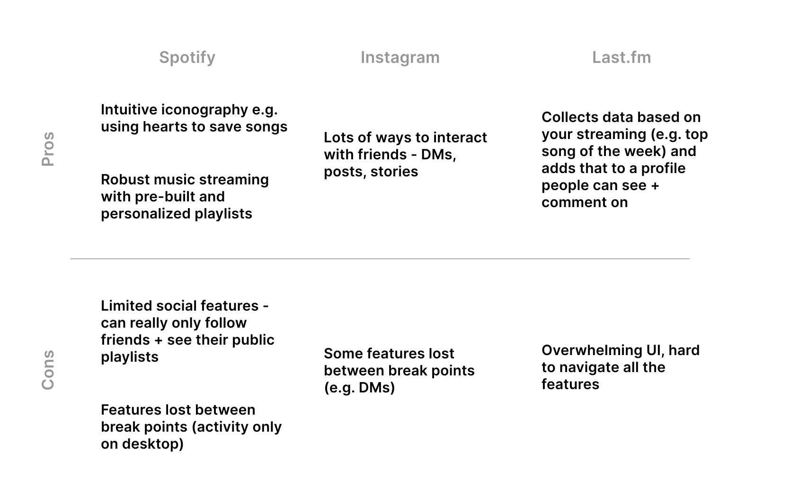
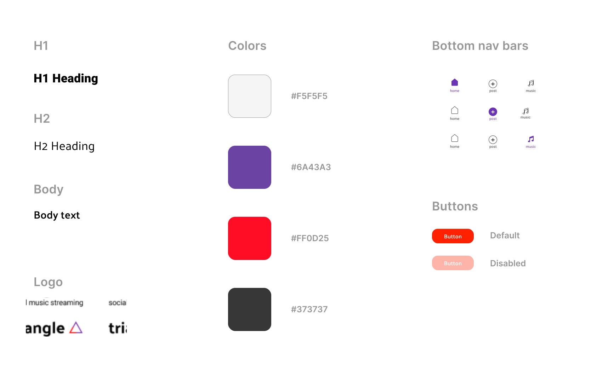

CHALLENGE
How can streaming music be a more social experience? Music can be a very social medium - my friends and I listen to and discuss it, travel to see shows together, meet other people through it, etc. However, this together-ness can feel lost when streaming music on your own. This project explores bridging that gap to make music streaming less isolating.
My Role
Sole UX designer & researcher - responsible for research, wireframe iterations, user testing, design system, and the high-fidelity prototype.
Timeline
Feb - March '20
OUTCOME
After finding gaps in the current market and talking to users, the final outcome of this project was a streaming app design with aspects that foster social interaction - including a social media-type feed and the ability to listen to + discuss music with your friends from your individual devices (shown below).


RESEARCH
Users
My first step was to conduct interviews to better understand how users
currently interact with music streaming as well as their wants & needs in a new product.
Every person interviewed expressed a desire to interact with their peers through their current streaming service.
A couple specific insights were:
- "I like getting music recs based on what I stream, but I'd also like to get them [on an app] from friends."
- "I like Instagram stories + the activity feature on Spotify because I get to see what my friends are up to in
real time."
Competitors
Looking at existing sites that related to this project, either by being music- or social media-related, I noted things that did and didn't work well to give me design inspiration + identify areas where current products are lacking.

DESIGN
Initial wireframes
After synthesizing my research from users + competitors, I started sketching out ideas. I then moved into Adobe XD to create a low-fidelity prototype for usability testing.

User testing
I conducted usability testing throughout my wireframe iterations to uncover pain points and found that users struggled with the initial navigation. Below are a few insights that led to design changes.


Visual identity
To help direct the visual identity of Triangle, I conducted A/B testing for two different visual directions.

After determining to stick towards the lighter iteration of Triangle, I worked out additional details and applied them to my final screens.

FINAL PRODUCT


See another project: